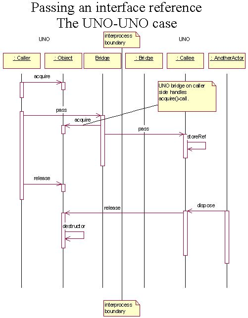
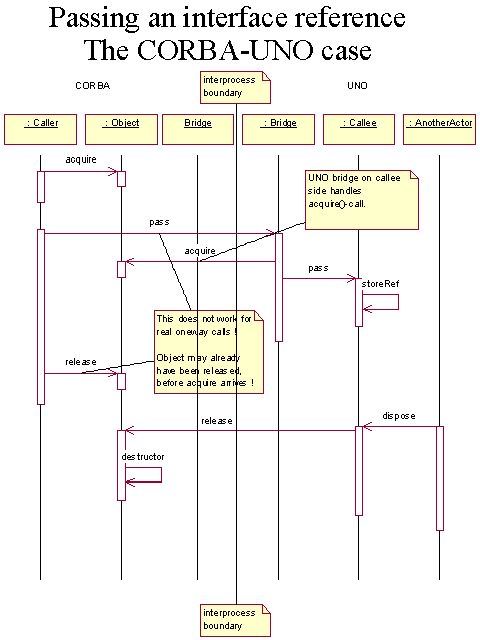
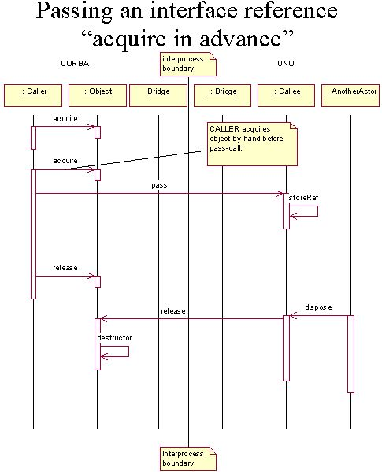
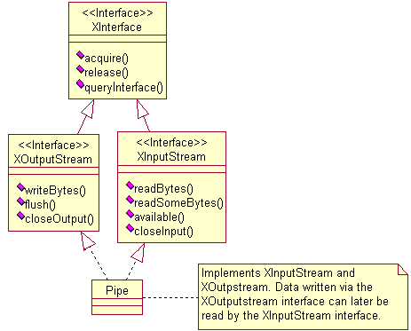

The CORBA-UNO bridge |
|
Introduction
- Design concepts
- Accessing UNO processes from CORBA and vice versa
- Oneway calls
- Object lifetime
- Thread identity
- Object identity
- Mapping of XInterface and GNOME::Unknown
- Multiple inheritance
- Type information
Implementation concepts
- Object identifier
- Corba bridge service
- Connection management
- IIOP versions
- Deployment for the GNOME orbit
OpenOffice.org is a fully featured office productivity suite available for the most popular platforms. One aim of OpenOffice.org is to seamlessly integrate into each platform's most popular desktops.
One major desktop on Linux and Solaris is developed by the open source GNOME project. The component model of the GNOME desktop is BONOBO, which is built on top of ORBIT, an open source CORBA ORB (Object Request Broker).
To be able to communicate with the GNOME desktop, we want to develop a CORBA-UNO bridge using IIOP (Internet inter orb protocol).
However, bridging UNO and CORBA is a non trivial task, as both component models are based on different fundamental concepts. This document should provide concepts about how to cope with most of these fundamental differences. It is supposed to grow within the next weeks as documentation either during and after development of the bridge. It should be a kind of an open document, as that important points brought up by the community will be inserted here.
An UNO-CORBA bridge allows to e.g. call methods at an UNO object (let's say a writer document) from the BONOBO object model. The caller does not need to know he is calling an UNO object, the only thing he does is invoking a method on a CORBA interface. It is not needed for the caller to have any UNO libraries in process nor is it needed for the callee to have any orbit libraries in process.
The other way round, the bridge allows an UNO programmer to call CORBA objects from UNO. The UNO programmer does not have to have any special CORBA knowledge, he simply calls on UNO interfaces.
To support callback interfaces, it should be possible to implement CORBA-interfaces in UNO and vice versa.
The main problem of accessing an object in a different process is that you need the IOR (Interoperable Object Reference) of this object in the other process. The most common way is to have a daemon like process (typically a namingservice or a implementation repository) that administrates IORs. Every CORBA application can access this daemon to retrieve an IOR of the desired object.
The root IOR of this daemon process must somehow be brought to every single application. How this is done, is orb dependent (possible solutions are a certain file on the filesystem, configuration files, environment variables, command line parameters, etc).
The mechanism how to access this IOR should be made abstract to allow to implement a different mechanism for different orbs. A simple interface as following one should be sufficient.
interface XRootIORProvider
{
/** tries to locate a corba root object using a specified method.
Note : In general, no CORBA bridge needs to be instantiated.
This IOR can be retrieved by some other mechanism.
@param howToFindObject
format: kind of service to find, comma separated attribute
list e.g. "GnomeResolverFromX,display=jbu-11096:1" or
similar.
@return stringified IOR, if a namingservice could be found,
otherwise an empty string.
*/
string findRootIOR( string howToFindObject );
};
|
returned stringified IOR can later be used to create an UNO interface reference to the object. Therefor will exist an CORBA bridge interface with a method
interface XCorbaBridge
{
[...]
Any resolveByStringifiedIOR( string sIOR );
[...]
};
|
The returned Any contains an UNO interface reference. This can be used to directly make calls.
The gnome case (ORBIT)
Up to version 1.3, GNOME uses the gnorba framework. From version 1.4 (yet to come) on, the oaf (object activation framework) is used. However, as this bridge is also in a early development cycle, we will focus on the more powerful oaf-framework.
Oaf is a mix of an implementation repository and the CORBA trading service. Certain services can be advertised using properties (name-value pairs). Services can be accessed by doing queries on properties. Accessing a service can either result in starting a new process or simply returning the object reference of an existing instance. Services can either be described within ini-files or can be inserted at runtime (e.g. when a service starts up, it inserts itself in the oaf).
The suggested way to use the oaf is to link against the oaf C-library and use C-API functions. However the oaf offers most of its functionality via idl-interfaces (e.g. in process shared library services can not be instantiated via the idl-interface).
IMHO the best way to access oaf would be to implement an RootIORProvider service, that implements the XRootIORProvider interface. The service may be started in a separate process, if needed. The implementation is linked linked against liboaf.so and uses the C-API to retrieve the stringified IOR of the root object. The original process then instantiates a CORBA bridge and tries to access it using the resolveByStringifiedIOR() method (without using the interface intermediate process anymore).
The service may later become simpler, if the IOR can be retrieved via a command line tool or a environment variable.
So far the problem, how OpenOffice.org can access CORBA services, is solved. But what is the other way round? How can we get the OpenOffice.org servicemanager into the oaf? There are multiple possible solutions.
Insert the UNO servicemanager IOR into oaf at Office startup. This works fine as long as the office is running.
Add oafinfo-files to the oaf, so that the oaf itself can start the office, if needed. The office must then behave like an arbitrary GNOME service, interpret command-line parameters and use the oaf-library to do some non-corba-communication with the oaf. It still needs to be investigated, if this has any problems.
(and in my eyes the CORBA way to do it) Have our own UNO daemon, that itself works as implementation repository for UNO services (such as the office). The office servicemanager is configured in the oaf simply by a persistent stringified IOR, but uses the host/port entries of the UNO daemon. When someone tries to make a call on the object, the UNO daemon starts up the office and replies a LOCATION_FORWARD iiop-message with the appropriate host/port entries. To allow this , ORBIT must support LOCATION_FORWARD messages (does it?).
Have a UNO daemon, that runs continuously. It implements the oaf OAF::ObjectDirectory interface and inserts it into the running oaf. It starts the office on demand using the office-specific command line parameters.
Which solution will be used is not yet determined.
CORBA does not guarantee the sequence of calls for oneways. However,
a lot of UNO interfaces and implementations rely on that (think of the sequence
acquire(),acquire(),release() gets mixed up to
acquire(),release(),acquire(), this would be fatal).
So I think, it is inevitable to
export all UNO-oneway-methods as synchronous to CORBA.
Oneway with CORBA interfaces however should be supported, as there it must have been decided during design, that the series of calls is not important.
Is a special solution for GNOME possible (maybe the implementation guarantees the sequence of calls)?
Several use cases must be taken into account when talking about object lifetime.
| use case | object used by | object implemented in | interface originally defined in | |||
|---|---|---|---|---|---|---|
| # | CORBA | UNO | CORBA | UNO | CORBA | UNO |
| 1. | x | x | x | |||
| 2. | x | x | x | |||
| 3. | x | x | x | |||
| 4. | x | x | x | |||
XInterface.
The UNO-CORBA bridge must create a proxy within the UNO process, it must implement
acquire(), release() and queryInterface(). As the
interface does not support a queryInterface method, it must be dummy-implemented, so that it
supports a query for the interface and all its superclasses.
The lifetime of the proxy bears no problem, it is simply refcounted. If the refcount drops to zero, the proxy dies silently, no message is transported to the original object.
acquire(), release()
and queryInterface() and maybe getCorbaID()
(see below).
Here the lifetime problem becomes a little difficult. Let us first have a look at lifetime handling in a UNO-UNO interprocess-bridge.

The pass() call shall pass an interface reference as its first argument. The
UNO-UNO bridge acquires the object on caller side, the bridge on callee side knows, that
it gets an acquired interface.
This cannot be done with a general CORBA orb, because the orb runtime doesn't know, that it should call acquire implicitly. How can this be solved? In general, the callee must acquire the interface, when it wants to keep it. The UNO-CORBA bridge would acquire it in advance and release it again when the newly created proxy is destroyed. Thus the UNO-developer wouldn't need to do anything by hand.

This does NOT WORK FOR ONEWAY CALLS. This technique
may also be inefficient, because every mapped interface requires a (maybe synchronous)
acquire() call. However, as GNOME does refcounting this way, the UNO-CORBA
bridge will also do it this way thus ignoring the problem.
Acquire in advance
Another possibility would be to make the CORBA developer responsible for this, if
he passes a object-reference, he must call acquire in advance. This is
very error prone (think about any, structs and sequences, that all would need to be
parsed for object references), however this is the only way how oneway requests
can pass object references. This could be introduced only for oneway calls, but as
in general it cannot be seen from the method signature, whether a call is oneway or
synchronous, this would be very confusing.

Another solution would be to simply ignore acquire() and release(),
but how shall the CORBA side then get to know, when an instance can be discarded, as the
OpenOffice.org API is not designed for telling the objects something like this?
XInterface in the UNO process. So for the
object itself, the lifetime must be controlled via acquire() and
release() calls.
The problem is, that when the UNO-object is once mapped out to a CORBA process, the
UNO-CORBA-bridge must hold a reference to the object and does not know, when to release it.
(The CORBA developer does not see the acquire() and release()
methods).
Often, CORBA interfaces are somehow designed to control lifetime of objects. For example,
an object has an explicit destroy() method, on which the documentation states
that the instance is destroyed and the object becomes unreachable. However the bridge
can't read documentation ( :o) ), so there must be mechanism, that the implementation
can tell the bridge, that it does not need to be held anymore.
As the implementation naturally does not know the bridge instance, there should be implemented a broadcast/listener mechanism to broadcast this message to all CORBA bridge instances. There could be a singleton service, that knows all CORBA bridges (maybe a factory, that creates all CORBA bridges.)
interface XCorbaBridgeFactory : XInterface
{
XCorbaBridge createBridge( ... );
void fireDisposeObject( [in] XInterface disposedObject );
}
|
acquire(), release(),
queryInterface() and getCorbaID() method. Because the
CORBA runtime does not support acquire() directly, the CORBA developer
must call acquire() and release() by hand.
Interface references returned by a method (as return value or out-parameter) are supposed to be acquired, thus if the references must be released by the CORBA programmer, if not needed anymore. This means, that a CORBA programmer who implements a UNO-interface methods, that returns an interface reference (via return value or out-parameter) must acquire the interface beforehand.
An arbitrary CORBA orb may not support thread identity. The id can be inserted into the service context list. If the CORBA process supports it, it is fine, if not thread identity cannot be preserved, this could result in deadlocks.
The service context id LogicalThreadId can be reused, that was original designed for DCOM interoperability. An appropriate ID for this should be applied at the omg.
CORBA does not guarantee object identity , but several UNO interfaces (especially container and broadcaster/listener interfaces) rely on that. I would like to introduce a typical example, where such a problem occurs.
interface XListener : XInterface
{
...
};
interface XBroadcaster : XInterface
{
void addListener( [in] XListener listener );
void removeListener( [in] XListener listener );
}
|
The XBroadcaster interface is implemented by the UNO object U (in the UNO process), the XListener interface is implemented by the CORBA object C in the CORBA process. Now there is an actor, that wants to add C into U and later remove C from U.
Adding is no problem, but removing is. The CORBA bridge in the UNO process must know, that the reference passed with the removeListener() method, is the same, that was passed with the addListener() method. However, it can't know for sure just by seeing the object reference, because in CORBA it is possible, that two object references denote one object.
The problem is even worse, because the removal may work most of the time (object references passed by add/remove are identical), but sometimes not.
Note, that the check for object identity in UNO is done by comparing the pointer of the XInterface proxy. So a UNO-CORBA bridge must ensure, that interfaces belonging to the same object get the same proxy. This must be done for every interface reference, because the bridge does not know in advance, if there will be a check for object identity.
Possible solutions for this problem are :
Leave the problem of the object identity to the CORBA developer. The UNO-base interface XInterface gets a new method in CORBA :
interface XInterface
{
any queryInterface( [in] Type type );
[oneway] void acquire();
[oneway] void release();
/**
returns an ID, that uniquely identifies this object.
The ID must be globally unique, e.g. a GUID.
*/
sequence< byte > getCorbaID();
};
|
Every time, an object is mapped from CORBA to UNO, the UNO-CORBA bridge checks, if it knows the reference already. If it is new, it calls getCorbaID() at the object. In case, the bridge knows the object already, the existing proxy is used, so that object identity is guaranteed.
This works (as long as a unique id is provided), but it may be excruciatingly slow for some applications (for every newly mapped interface, 1 remote call is necessary, think of a sequence< XInterface > with 100 elements, and you know what I mean :o) ). This is also a burden for the CORBA developer.
There are three solutions, to avoid the performance problem
The UNO-CORBA bridge itself exports the interface XRemoteCorbaBridge interface (how can it be offered to the client?).
interface XRemoteCorbaBridge
{
[oneway] void associateInstanceWithId(
[in] any instance, [in] sequence< byte > corbaID );
}
|
In the any, the object reference is inserted, that is going to be mapped in near future. The sequence< byte > contains the id, that would be returned by the getCorbaID()-method. This would lead to the following code (I use UNO C++ notation, because I don't know a CORBA C++ mapping very good):
Reference< XRemoteCorbaBridge > rRemoteCorbaBridge =
... (got from somewhere);
Reference< XBroadcaster > rBroadcaster = ...(got from somewhere);
Reference< XListener > rListener = ... ( got from somewhere);
Any myAny;
myAny <<= rListener;
rRemoteCorbaBridge->associateInstanceWithId(
myAny, rListener->getCorbaID() );
rBroadcaster->addListener( rListener );
// and later
...
rRemoteCorbaBridge->associateInstanceWithId(
myAny, rListener->getCorbaID() );
rBroadcaster->removeListener( rListener );
|
(The second associateInstanceWithId call is not necessary, when the same reference is used).
One advantage of this solution is, that the CORBA developer must only care for the problem, where performance is needed, but it looks quite ugly.
Because CORBA does not guarantee the series of oneway calls, it is not certain , that this will work as expected (but quite likely for most ORB implementations). However as this is only an optimization, the code will still works.
The orb could be modified, that it inserts into the IOR a special profile which includes the object identifier. Such a profile must be specified and a tag must be applied at the omg.
For every UNO interface, a struct is generated, for example:
struct container_XListener
{
XListener reference;
sequence< byte > corbaId;
};
|
This struct replaces every occurrence of an interface reference such a way, that e.g. the XBroadcaster interface looks like
interface XBroadcaster : XInterface
{
void addListener( [in] struct container_XListener listener );
void removeListener( [in] struct container_XListener listener );
}
|
The CORBA developer must then fill the struct with the correct id before passing it to a UNO. Using no id might signal, that the caller does not care about object identity for this object.
Remove all API in UNO, that relies on object identity and erase those interfaces. There is currently a lot of code relying on this. It does not seem to be possible in near future.
For every mapped interface, a new proxy is generated, object identity would never work. Thus, the above API is not useable for the CORBA programmer.
A clever proxy for such a container interface is used in the UNO process.
interface XBroadcasterProxy : XInterface
{
long addListener( [in] XListener listener );
void removeListener( [in] long id );
}
|
The XBroadcasterProxy implementation is connected to the XBroadcaster implementation somehow before (it may be a separate service). The XBroadcasterProxy.addListener implementation adds XListener-Proxies to the XBroadcaster implementation and stores a hash id, which is returned to the original actor. This actor can later remove the interface at the XBroadcasterProxy implementation using the returned id.
The broadcaster proxy must certainly be implemented generically, so that it can be reused as often as possible.
This works in the concrete example, but does not solve all problems. If the interface reference of C is passed to an object in the UNO process, and this object inserts it into a container, the same problem may occur.
We are currently looking for a better solution. Any suggestions?
GNOME::Unknown and com::sun::star::uno::XInterface
As a result of the above discussion on object identity and object lifetime, the following rules can be obtained :
All CORBA interfaces seem to be derived from XInterface in the UNO process. The typelibrary needs to be extended, so that the CORBA-UNO bridge can identify, whether a given interface has its origin in CORBA or in UNO.
All UNO interfaces appear in CORBA as derived from XInterface, but XInterface gets the additional getCorbaId() method.
All CORBA interfaces derived from GNOME::Unknown appear in
UNO only as derived from com::sun::star::uno::XInterface, the
GNOME::Unknown interface does not appear. The typelibrary needs to
be extended, so that the CORBA-UNO bridge can identify, that the GNOME::Unknown
interface is the real base interface.
Both processes (UNO and CORBA) must have the same type information available. In UNO, these types must be accessible via the typelibary. The CORBA-UNO bridge will generically marshal these calls without the need of generated code. On CORBA side, there must be (in general) libraries of generated stub/proxy code available.
As there is currently no better proposal for the object identity problem, we assume that solution 1. is chosen.
First the mapping of UNO objects to CORBA is discussed. Below you find a typical example of an UNO object implementing multiple interfaces.

The Pipe object is instantiated in the UNO process and is passed as an XInterface reference to the CORBA-process.
In CORBA, object references contain the most derived type and (beside other things) an unique object identifier. A request can be invoked by sending the unique object identifier (and thus leaving out the type information). As there is no most derived type in UNO, the UNO-CORBA bridge must be able to extract solely from the object identifier, which object and which interface the request is meant for.
The bridge could use the UNO object identifier and try to find out by the method name, which interface shall be called on. But this would mean that it is not possible to have two methods with the same name in two different interfaces.
So the UNO-CORBA bridge should use the UNO object identifier as an prefix and adds a type identifier. The type identifier may either be the complete type name or a single byte (the bridge ensures the byte's uniqueness for every single object ).
So in the above example, if the UNO object identifier is "leo", the CORBA object identifier could be
| Object ID | type name |
|---|---|
| leo0 | XInterface |
| leo1 | XInputStream |
| leo2 | XOutputStream |
For persistent object references, the name given to the object when inserting it into the bridge is used (Note that this will only be done for the exact type, other interfaces of the persistent object will have transient ids), so for persistent references, there is no type suffix.
Now the mapping of CORBA objects to UNO is discussed. If an CORBA object implements UNO
interfaces, the object must implement a getCorbaId() method.
The bridge calls this method and uses the return value as unique object identifier.
For CORBA objects implementing CORBA interfaces, the bridge itself must generate an object identifier. It may happen that the same object gets different object identifiers, because the CORBA-UNO bridge has no possibility get the id of the object. So object identity for these objects will not work in UNO. However, the bridge must ensure, that an identifier is unique, therefor it is not sufficient to use the CORBA object identifier (two different CORBA processes may use the same identifier). Therefor an connection dependent prefix is added to the object identifier (maybe a GUID generated for every connection).
What does the bridge need?
Port and host, that shall be inserted in outgoing TRANSIENT object references.
Port and host, that shall be inserted in outgoing PERSISTENT object references. Here the host/port number of an implementation repository may be entered.
Port and host, that the shall be listened to. There may be multiple host/port combinations. Note that in outgoing object references only one host/port can be inserted ! If you want two different hosts/ports on two different transient object references, you need two instances of a CORBA bridge.
Access to acceptor and connector services, that allow the bridge to accept incoming connections and to establish outgoing connections, if needed.
Objects, that shall be mapped persistently. It should be possible to make object references persistent. Persistent object references stay the same even if the server process is restarted. To achieve this, the bridge must know the objects before accepting calls. This is for two reasons : If an incoming request to such an object comes in, the bridge must know, where to delegate it. If the persistent object is mapped, it must marshal the persistent reference instead of the transient one.
Below you can find a first possible draft of the interface. No error handling yet specified.
struct PersistentInstance
{
string Name;
any instance;
};
interface XCorbaBridge : XInterface
{
/** allows the bridge to listen on multiple ports
*/
void addAcceptor( [in] XAcceptor acceptor, [in] string acceptString );
void removeAcceptor( [in] XAcceptor acceptor );
/** the bridge calls uses this connector, to
establish interprocess connections.
*/
void setConnector( [in] XConnector connector );
/** the reply address is inserted in transient object references.
*/
void setTransientReplyAddress( [in] string connectionString );
void addTransientObject( [in] any instance );
void setPersistentReplyAddress( [in] string connectionString );
void addPersistentObject( [in] string objectName, [in] any instance );
void removePersistentObjectByName( [in] string objectName );
sequence < struct PersistentInstance > getPersistentObjects();
/**
Removes either transient or persistent objects.
The object must have been added before either by addTransientObject or addPersistentObject.
*/
void removeObject( [in] any instance );
/**
returns a stringified IOR, that an arbitrary orb may use to connect to this object.
The object must have been added before either by addTransientObject or addPersistentObject or
has been mapped before from a CORBA process.
*/
string getIORForObject( [in] any instance );
/** allows retrieval of an object from a arbitrary CORBA process using a stringified IOR.
*/
any resolveByIOR( [in] string sName );
/**
Sets corba bridge into an inactive state. All calls are suspended, no connections
are accepted.
After instantiation, the bridge is in a suspended mode. One may mush to switch to
suspended mode again, when multiple changes shall be applied to the bridge
parameters consistently.
*/
void suspend();
/**
Sets corba bridge into an active state. Connections can be accepted, calls
are processed.
After instantiation, the bridge is in a suspended mode.
*/
void resume();
/** Shutdown the bridge. All connections are interrupted, all instances are released.
@param waitForCompletion if true, the method waits until all threads have gone.
if false, the method returns immediately. ( This may be
necessary, if the method is called from a remote process ).
*/
void shutdown( [in] boolean waitForCompletion);
};
service CorbaBridge
{
interface XCorbaBridge;
};
|
The UNO-CORBA bridge needs to distinct between connections initiated from the UNO process or from an arbitrary CORBA process. If a request shall be invoked on a object, that has not been invoked before, the IOR must be parsed for a host/port combination. The bridge has a hashmap for actively initiated connections. The key is host/port and the connection is the value.
If there is no match, the bridge tries to initiate a connection. On success, the connection is added to the hashmap. The proxy should store that it got the object last time over this connection for performance reasons.
Actively initiated connections can be closed at any time. This should be done, when the last proxy, that uses this connection, dies.
Passively initiated connections should be closed by the remote process. Another possibility would be to close it when the last stub for this connection dies, however then a CloseConnection message must be sent.
Bidirectional communication (as specified by GIOP 1.2) should be ignored in the first run, because it complicates things a lot.
Fragmentation messages
Bidirectional communication over one connection
(prebuilding stub/proxy code?, which compiler to use?, where to put the libraries?, how do we get the UNO types into the typelibrary?)
|
Author:
Joerg Budischewski,
Jürgen Schmidt
($Date: 2004/11/27 08:10:06 $)
Copyright 2001 Sun Microsystems, Inc., 901 San Antonio Road, Palo Alto, CA 94303 USA. |